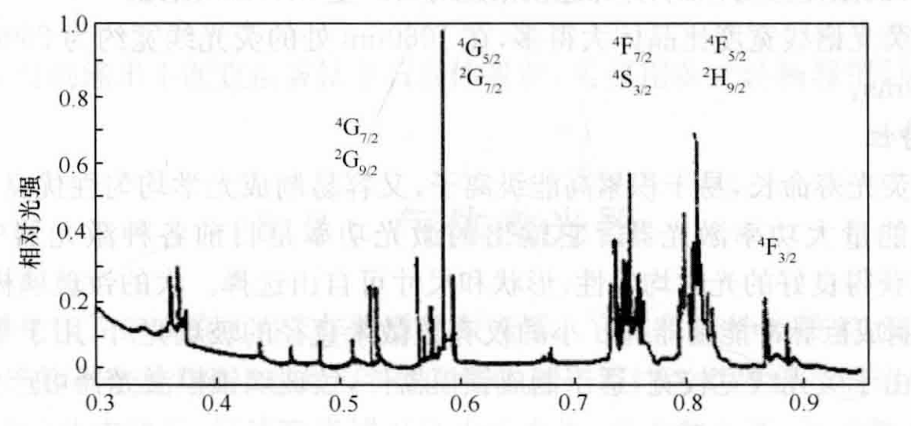

以钇铝石榴石晶体YAG为基质，掺杂约1%原子百分比的Nd3+离子.
晶体中部分Y3+离子被Nd3+离子替代，呈淡紫色.
其中激活离子为Nd3+.
Nd:YAG的吸收光谱中，对激光有贡献的主要有五个吸收光谱带，中心波长分别在525nm、585nm、750nm、810nm与870nm附近.

每个吸收带带宽约为30nm，其中以750nm与810nm为中心的两个吸收带最强.
某种物质在某段连续或近似连续的波长范围内，对入射光有明显吸收.
泵浦光被改吸收带吸收后，能够有效将粒子送至激光上能级，最终参与形成粒子数反转与激光输出的吸收带.
在光泵激励下，处于基态4I9/2的Nd3+离子吸收相应波长的光子能量后，跃迁到4F5/2、2H9/2（对应810nm吸收带）和4F7/2、4F3/2（对应750nm吸收带）等能级.
在这些能级上的离子很不稳定，很快通过无辐射跃迁迅速落至4F3/2能级.
4F3/2能级是寿命约为0.23ms的亚稳态能级，作为激光上能级.
处于4F3/2能级的Nd3+离子可以向多个终端能级跃迁并产生荧光辐射：
激光下能级
概率最大的是：4F3/2 → 4I11/2跃迁（波长为1064nm）.
其次是：4F3/2 → 4I9/2跃迁（波长为950nm）.
概率最小的是：4F3/2 → 4I13/2跃迁（波长为1350nm）.
类似4F3/2这种的.
用于表示原子、离子或分子的能级状态的.
4F3/2 → 4I11/2与4F3/2 → 4I13/2属于四能级系统，阈值低，仅需很低的泵浦能量就能实现激光振荡.
其中，1064nm的荧光强度约为1350nm荧光光强的4倍，1064nm谱线首先起振，从而抑制1350nm谱线；
只有在有意抑制1064nm激光的情况下，才能产生1350nm的激光.
4F3/2 → 4I9/2属于三能级系统，室温下难以产生激光.
Nd:YAG激光器通常仅产生1064nm的激光振荡.